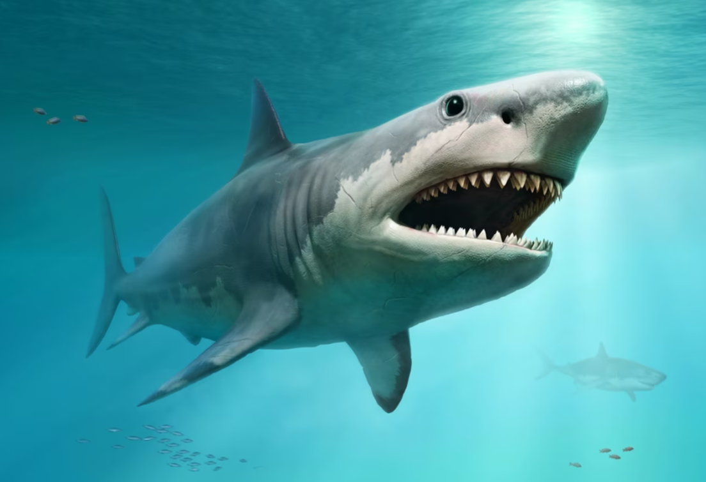

About Carcharocles Megalodon
Carcharocles megalodon was once the most fearsome predator to reign the seas. This ancient shark lived roughly 23 to 3.6 million years ago in nearly every corner of the ocean. Roughly up to 3 times the length of a modern-day great white shark, it is the largest shark to have ever lived. It had a powerful bite with a jaw full of teeth as large as an adult human’s hand. They likely could tear chunks of flesh from even the largest whales of the time. It should come as no surprise that upon discovery in the fossil record, the massive shark was named Carcharocles megalodon or “big toothed glorious shark.”
Now well-known within pop culture, Carcharocles megalodon is known by many as simply the megalodon, though it is important to note this shortened version is also the name of a genus of clams and can be cause for confusion within the scientific community. For the following text, Carcharocles megalodon will be shortened to the megalodon, a reference to the shark and not the clam.